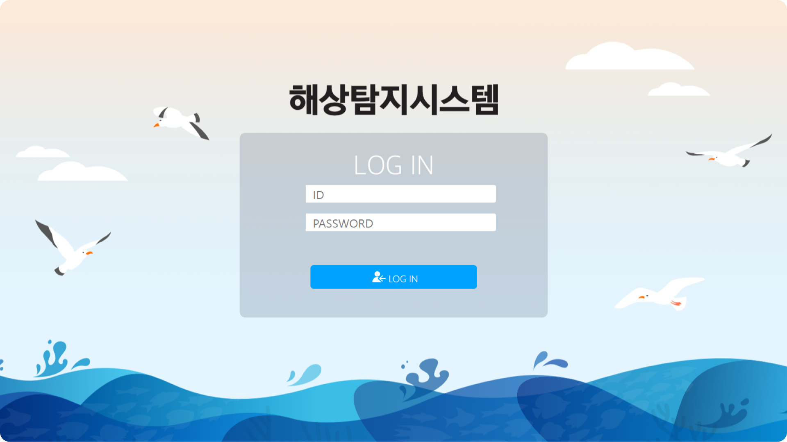
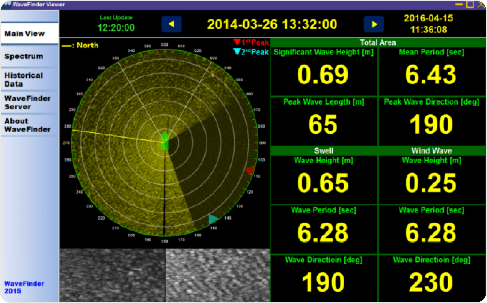
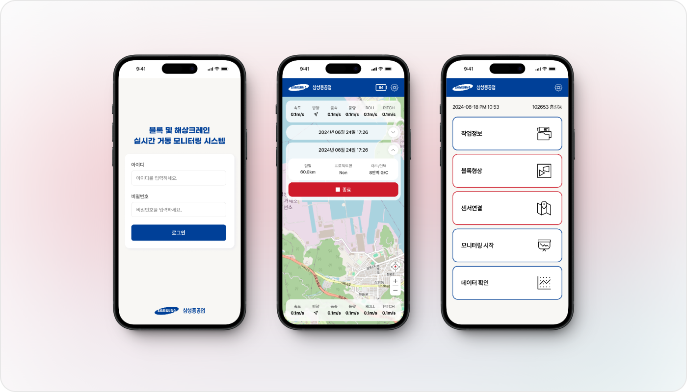
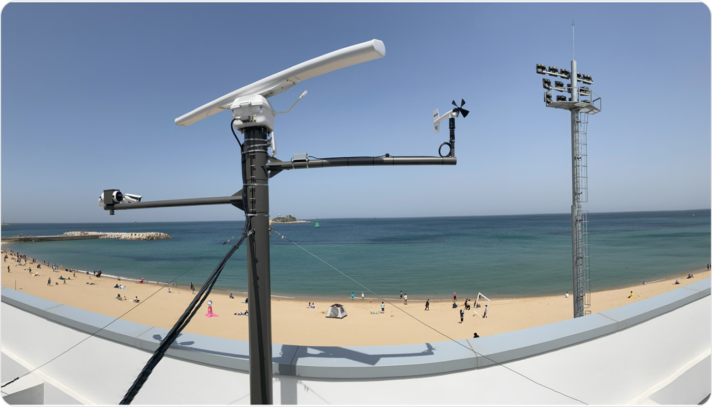

MONITORING SYSTEM
파랑계측모니터링 시스템
해양환경 상태 모니터링 및 분석 

특허등록완료
X밴드 레이더 탐지 PTZ·CCTV 연동 기술 확보하고,
X밴드 레이더 기반 실시간 파랑(파고, 파주기, 파향)
계측 기술 확보

GIS기반 반응형 웹사이트
GIS기반 반응형 웹사이트를 통한 속초해수욕장
앞바다 파랑정보 실시간 공유 서비스 실시
